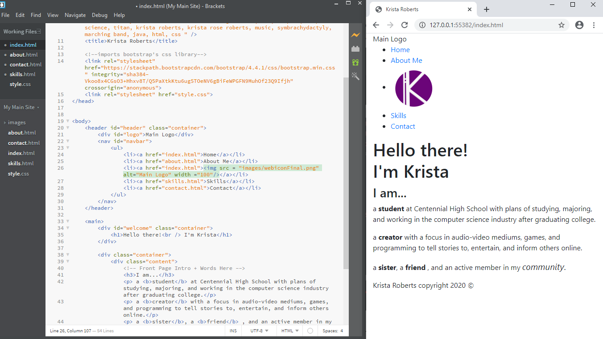

A Little Bit About Me,
A responsible and focused high school student, I'm looking forward to a future in computer science with a passion for creating stories and experiences in order to help and inform others.
Expected to graduate in the class of spring 2021, I am an active student in many organizations and maintain a 4.0 GPA at Cenntenial High School in Frisco, Texas.
Address: 6901 Coit Rd, Frisco, TX 75035
Phone: (469) 633-5600

My Life,
I've been an a member of Centennial High School's Computer Science Club since 2018, and since then I've reguarly competed at events such as UTD's Battle of the Brains, the Annual Digital Divas Competition in North Texas, and in 2019 I went to UIL invitational competitions before the Coronavirus canceled the continuation of the competitions. Also, In 2019 I placed 8th place in the Best of Texas's 5A Computer Science competition.
NHS is an amazing way to access more opportunities to help others and give back to my community. A member since spring 2019, I have completed more than 30+ hours at Centennial, primarily aiding oranizations in the arts and humanities, and plan to continue this behavior in the future.
A member of the Centennial Marching Band from 2017 to 2020, I marched Euphonium/Baritone at many games and marching competions such as the Plano East Marching Invitational and placing 5th at the UIL Area Finals in 2019 and 2017.
For the 3 years I was lucky enough to call myself a member of the mighty titan band, I found myself a part of not only an organization, but of a family and community and will be forever grateful for my oppertunity to meet and bond with such amazing people.
A reoccuring holiday tradition for Centennial's Musician's With A Purpose (MWAP) club is to practice for, and then perform holiday carols for those at Plano's Texas Health Presbyterian Hospital who can't spend the ordinarily festive time in the comfort of thier own homes. This initiate brings some joy and holiday spirit to those who are in an otherwise stressful point in their lives.
I look forward to acting as the secretary for the group in the holiday season of 2020.


In 2002, I was born with a congenital condition called symbrachydactyly. Because of this my left arm is significatly smaller the the average person's, as it stopped forming shortly after elbow joint.
But, what I lack in an arm, I made up for in a second family and a home away from home.
Since 2017, I've attend a summer camp as a camper for a week each year called Hands Down 2.0 in Killeen, Texas designed to give kids with upper limb differences a chance to spend time with, and build a support system with one another. After high school graduation, I will meet the age requirements in order to volunteer as a camp counselor and look forward to giving back to the organization and being to a new generation of kids what my counselors were to me, someone they can depend on and look up to.
And My Passions.
In addition to learning Java and coding for competitions and school work, I have also learned HTML and the basics of CSS. To practice these skills, in the summer on 2020, I coded this website to document and organize my high school accomplishments to supplement resumes and college applications
To combine my skills in audio and video editing learned in my middle school's news broadcasting club, with my love for music, in 2018 I started a youtube channel where I primarily post song covers and original music. As well as being a creative outlet it has also been a good way to maintain and grow skills that would otherwise go neglected, to learn about music production, and to gain a greater understanding of networking and growing platforms in online spaces.
I've been playing euphonium for 6 years though middle and high school band programs, but outside of school I've also dedicated time to learning ukulele, piano, and electric guitar. Of the four instruments, ukulele is definitely the easiest to play with one hand.


Outside of the realm of music, I also enjoy creating art in other mediums, such as embroidery, drawing, cross-stitch, and painting in my free time.